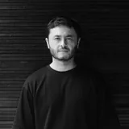
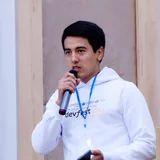

Murakkab mahsulotlarni sodda va ishonchli interfeyslarga aylantiraman.
UX/UI va Product Design sohasida {Y} yildan ortiq tajribaga egaman. Fintech va E-commerce mahsulotlarini end-to-end dizayn qilganman — tadqiqot, UX-arxitektura, UI, design system va product launch.
Men foydalanuvchi bir qarashda tushunadigan mahsulotlar va jamoalarga tezroq yetkazishga yordam beradigan design system’lar yarataman.
Men shakllantirgan mahsulotlar
B2B savdodan hujjat aylanmasigacha — o‘lchanadigan natijalar bilan end-to-end dizayn.
iWon Super App
O‘zbekiston uchun bitta super ilovadagi hamyon, ijtimoiy tarmoq va marketplace, men boshqaradigan bitta design system bilan bog‘langan. Bitta case’da to‘rt loyiha: Design System, Hamyon, Social va Seller iMarket.
zon.uz
Xavfsiz va qulay xaridlar uchun B2B e-commerce platformasi. Checkout va invoys jarayonlarini optimallashtirib, friction'ni kamaytirdim va konversiyani oshirdim.
Doczon
Elektron hujjat aylanmasi tizimi. Dashboard va axborot arxitekturasini qayta ishlab chiqib, jamoalar vazifalarni sezilarli tezroq bajaradigan qildim.
Foodee
Restoran, kafe va mehmonxonalar uchun onlayn menyu platformasi. Landing va menyu tajribasini qayta ishladim — kategoriyalar, savat, mahsulot ko‘rinishi va to‘lovlar — mehmonlarni statik PDF menyudan tez, kontaktsiz buyurtmaga o‘tkazdim.
Raqamlarni harakatga keltiradigan dizayn
Turli mahsulot va jamoalar bo‘yicha o‘lchangan natijalardan namunalar.
Ish tajribam
{Y}+ yil — fintech, e-commerce va mahsulot jamoalarida.
Senior Product Designer Linear Technology Solutions To‘liq stavka
Iyun 2026 — hozirgacha
- Fintech platformalari uchun UX/UI dizayn (web, iOS, Android).
- Figma’da Design System qurish va rivojlantirish.
- Tranzaksion interfeyslar, prototiplash va design QA.
- Product, frontend va mobile jamoalar bilan yaqin hamkorlik.
Product Designer iWon FinTech Yarim stavka
Avg 2025 — hozirgacha
- Super App uchun masshtablanadigan Design System yaratdim — barqaror interfeyslar va tezroq ishlab chiqish.
- To‘liq UX/UI siklini boshqardim (Web, iOS, Android): tadqiqotdan yetkazib berish va implementatsiya QA’gacha.
- UX-tadqiqot: foydalanuvchi ssenariylari, pain-point tahlili, CJM optimizatsiyasi.
- Asosiy flow’larni optimallashtirsim (ro‘yxatdan o‘tish, to‘lovlar, navigatsiya) va friction’ni kamaytirdim.
Product Designer New Edu LLC
Fev 2026 — May 2026
- To‘liq product-design siklini boshqardim: tadqiqot, UX/UI, prototiplash, ishlab chiqishga topshirish.
- UX-tadqiqot: ssenariy tahlili, pain-point’lar, CJM.
- Asosiy flow’larni qayta ishladim (ro‘yxatdan o‘tish, autentifikatsiya, asosiy funksiyalar) — qulaylikni oshirdim.
- Barqarorlik va tezlik uchun design system va qayta ishlatiladigan komponentlar yaratdim.
Middle UX/UI Designer Zon Cloud LLC
Sen 2024 — May 2026
- 10 000+ kunlik faol foydalanuvchili ekotizim uchun UX/UI jarayonlarini boshqardim — user-flow va konversiyaga urg‘u.
- Invoys UX optimizatsiyasi → +43% konversiya.
- Doczon dashboard redizayni → −27% vazifa vaqti.
- foodee ilovasi UX redizayni → +8% buyurtma konversiyasi.
- Zon.uz checkout optimizatsiyasi → −14% drop-off.
- Design system dizayn–dev farqini 40% kamaytirdi; 500+ ekran qayta ishlandi.
UX/UI Designer Jobo.uz
Apr 2023 — Avg 2024
- Marketing kampaniyalari uchun responsive landing page va bannerlar yaratdim.
- Konversiya va qulaylikka yo‘naltirilgan landing’lar.
- Brend uslubiga mos ijtimoiy tarmoq kontenti.
- iOS va Android uchun mobil ilova UI’lari.
Ishlatadigan asboblarim
Tavsiyalar
Hamkasblarning LinkedIn'dagi haqiqiy tavsiyalari.
I had the pleasure of working with Ali, and I can confidently say that he is one of the most thoughtful and talented Product Designers I have worked with. Ali combines strong design skills with a deep understanding of users, business goals, and the technical realities of product development.
What I particularly appreciate about Ali is his ability to look beyond just the visual side of design. He doesn't simply create beautiful interfaces; he thinks carefully about the entire user experience, from understanding the problem and user needs to designing practical and scalable solutions. He asks the right questions, pays attention to details, and always tries to understand the reason behind a requirement before jumping into the design.
As a Product Designer, Ali has a very good sense of usability, information architecture, user flows, and interaction design. His designs are clear, modern, and consistent, but at the same time, they are focused on solving real problems. He is also very attentive to small details that can make a big difference in the final product.
Another quality that stands out is his collaboration with developers and other members of the team. Ali understands that great products are built through collaboration between design, engineering, product, and business teams. He communicates his ideas clearly, listens to feedback, and is always open to discussing different approaches. From a developer's perspective, this makes working with him especially comfortable and productive.
Ali is also someone who takes ownership of his work. When he receives a task, he doesn't just complete the requirements and move on. He tries to understand the bigger picture and considers how the solution will affect the product and its users in the long term. He is proactive in suggesting improvements and is not afraid to challenge an existing solution when he believes there is a better approach.
Beyond his professional skills, Ali is a reliable, positive, and easy-going person to work with. He contributes to a good team atmosphere and is always willing to help others when needed.
I would highly recommend Ali to any company looking for a strong Product Designer who combines creativity, user-focused thinking, attention to detail, and excellent teamwork. I am confident that he would be a valuable addition to any product team and would make a positive impact on both the product and the people he works with.
Although Ali and I worked together for only a few months, he made a strong impression through the consistency, care, and professionalism he brought to his work. He has a genuine growth mindset and continually looks for ways to improve—not only while a design is being reviewed, but even after it has been accepted. He often returns with thoughtful refinements, catches subtle issues, and raises the quality of the final result without needing to be asked. Ali combines strong visual judgment with practical UX thinking. He pays close attention to usability, edge cases, design consistency, and the details required for a smooth handoff to developers. What I appreciated most was his sense of ownership — he actively contributed to translating product requirements and abstract ideas into clear, intuitive experiences. I would confidently recommend him to any team looking for a UX/UI designer who values continuous improvement, collaboration, attention to detail, and high-quality execution.

Работать с Али — одно удовольствие. Он из тех UX/UI-дизайнеров, которые не просто делают красивую картинку, а глубоко погружаются в задачи бизнеса и потребности пользователей. Али обладает отличным чутьём на современный визуал, но при этом всегда аргументирует свои UX-решения на основе данных и исследований. Он отлично справляется с проектированием сложных интерфейсов, делает их понятными, а его внимание к деталям и аккуратность в Figma значительно упрощают жизнь разработчикам. Если вам нужен дизайнер, который умеет слушать, быстро адаптируется к изменениям и доводит продукт до идеала — искренне рекомендую Али!
Ali has an extraordinary talent for delivering high-quality designs. He consistently anticipates edge cases and approaches all feedback with an open mind. His meticulous attention to detail ensures that the design hand-off is seamless, allowing developers to focus entirely on technical implementation. I truly enjoy working with him, as he serves as a vital bridge between the development team and the project owner's vision. I highly recommend Ali to anyone who values exceptional, high-standard work.

От лица команды ZonCloud хочу выразить искреннюю благодарность и дать тёплую рекомендацию Али — одному из самых талантливых UI/UX-дизайнеров, с кем нам доводилось работать. За время совместной работы Али показал себя не просто как креативный специалист, но как человек, глубоко понимающий логику продукта, поведение пользователей и бизнес-цели. Каждый его макет — это продуманный, структурированный опыт, где внимание к деталям граничит с перфекционизмом. Али всегда на шаг впереди: предлагает идеи, которые упрощают сложное, делает ревью, не дожидаясь просьб, и думает о результате, как настоящий продуктовый дизайнер. Если вы ищете того, кто «делает красиво» — Али справится. Если вы ищете того, кто делает правильно — он уже начал. Рекомендую от всей души.
Ali is one of the most thoughtful and creative UX/UI designers I've had the pleasure to work with. At Jobo, he consistently transformed abstract product ideas into clean, intuitive, and user-friendly interfaces — always paying close attention to both aesthetics and usability. What stood out most was his collaborative nature: he actively encouraged input from developers, product managers, and even end-users, which made his designs feel deeply aligned with the whole product experience. His ability to balance creative vision with practical UX thinking, along with his professionalism and commitment to quality, made him a key part of our team. I'd highly recommend Ali to any organization looking for a designer who can turn ideas into experiences users love.
He's a super talented UX/UI designer — not just creative, but really thoughtful about user experience. I've seen him take messy ideas and turn them into clean, simple, and beautiful designs that work. He's also just great to work with — calm, easy to talk to, always open to feedback, and genuinely cares about making things better. If you get the chance to work with him, take it. You won't regret it.
Проработал с Али в компании ZonCloud с января по июнь 2025 года. За это время он проявил себя как ответственный и внимательный к деталям UX/UI-дизайнер. Перенёс существующие графические ресурсы из CorelDRAW в Figma, что упростило совместную работу команды; помог установить единый набор компонентов (Design System), что сократило разногласия в UI и ускорило цикл правок; создавал адаптивные интерфейсы для основных продуктов ZonCloud (ZonID, Doczon, BankZon и др.). Всегда шёл навстречу разработчикам и менеджерам, чётко реагировал на фидбэк и завершал задачи в срок. Али — спокойный и надёжный специалист, с которым приятно работать.
I had the pleasure of working with Ali Umirov, where he was responsible for UI/UX design. Ali is not just a talented designer — he's someone who truly understands how to create beautiful designs that are also easy and intuitive for users. He created many interfaces that were not only visually impressive, but also made our products feel simple and enjoyable to use. He has a strong sense of aesthetics, but always thinks about the user experience first. He was always open to feedback, shared ideas, communicated clearly, and made sure his design work aligned perfectly with development needs. If you are looking for someone who combines creativity with practical UX thinking — I strongly recommend Ali.
I had the pleasure of working with Ali, and I can confidently say that he is one of the most talented UI/UX designers I've ever collaborated with. His ability to turn complex ideas into intuitive and visually stunning designs is truly impressive. During our time at Zon Cloud, Ali played a crucial role in designing user-friendly interfaces that not only looked amazing but also significantly improved user experience. What I admire most is his collaborative mindset and adaptability — he actively seeks feedback, iterates quickly, and always strives for perfection. If you're looking for a highly skilled, creative, and user-focused UI/UX designer, I wholeheartedly recommend Ali.
Keling, birga ajoyib narsa yaratamiz
Mahsulot, jamoa yoki g‘oyangiz bormi? Yangi imkoniyat va hamkorliklarga ochiqman.